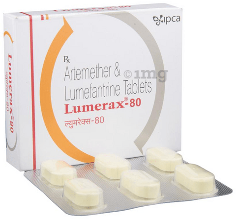
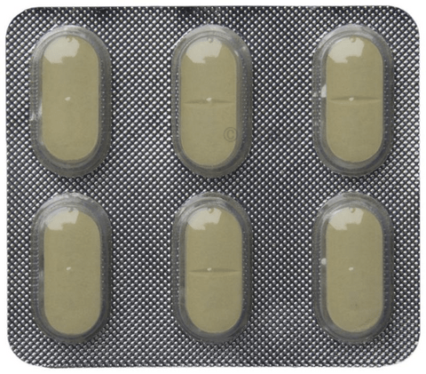

Lumerax 80 Tablet is used for the treatment of malaria in both children and adults. It contains two medicines both of which belong to a group of medicines called antimalarials. However, it is not used to prevent malaria or to treat severe/complicated malaria (when the brain, lungs, or kidneys are affected).
General Information
Salt Synonyms
Artemether (80mg) + Lumefantrine (480mg)
Manufacturer
Ipca Laboratories Ltd
Storage
Store below 30°C


Uses of Lumerax 80 Tablet
Lumerax 80 Tablet is prescribed for:
In Treatment of Malaria
Side effects
Most side effects do not require any medical attention and disappear as your body adjusts to the medicine. Consult your doctor if they persist or if you're worried about them
Common Side effects of LUMERAX TABLET
Headache
Loss of appetite
Dizziness
Weakness
Substitutes
Famal L 80 mg/480 mg
₹7.82/tablet
Rezatrin 80 mg/480 mg T
₹17.34/tablet
Benther AL DS Tablet
₹20.94/tablet
Lumex Forte 80 mg/48
₹22.86/tablet
Quick Tips
You have been prescribed Lumerax 80 Tablet for the treatment of acute uncomplicated malaria that is resistant to other antimalarial medications such as chloroquine.
Finish the prescribed course, even if you start to feel better. Stopping it early may make the infection come back and harder to treat.
It should be taken with food or drinks rich in fat such as milk.
It may cause fatigue and dizziness. Use caution while driving or doing anything that requires concentration.